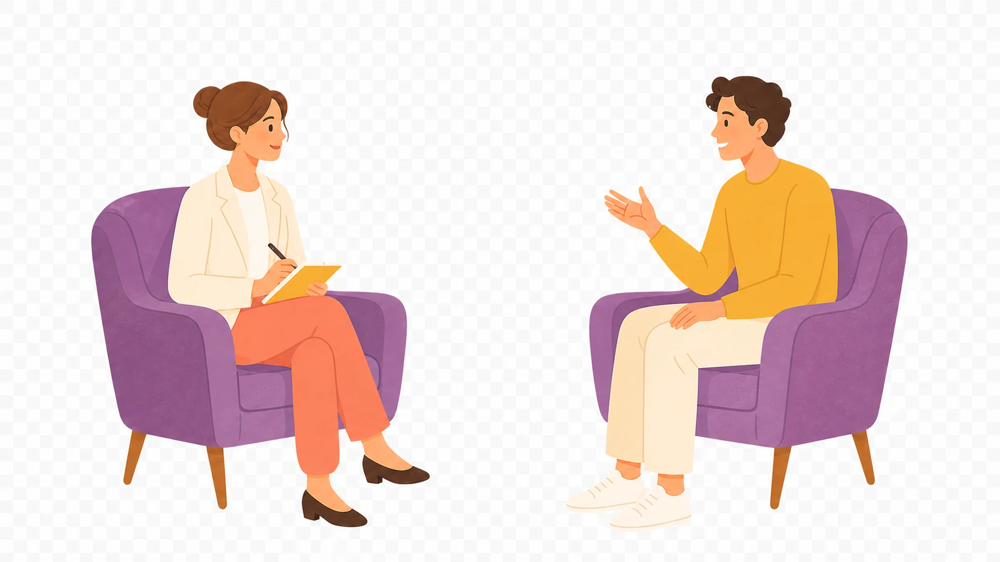
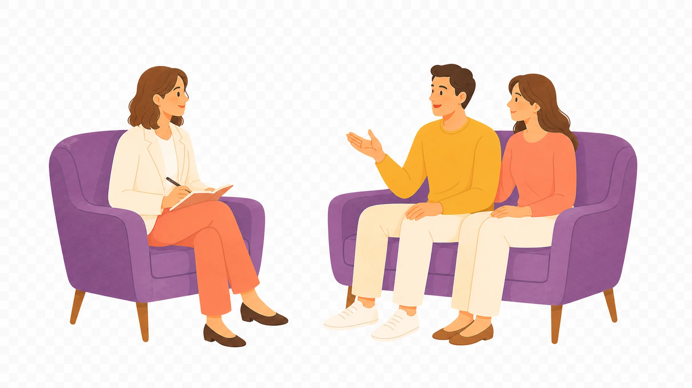
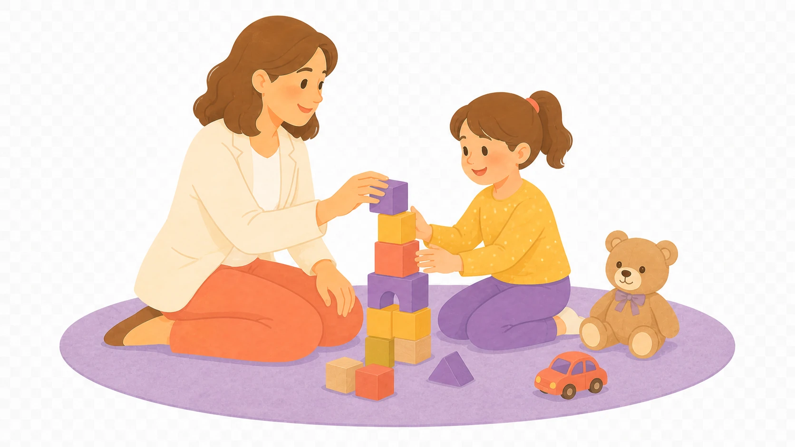
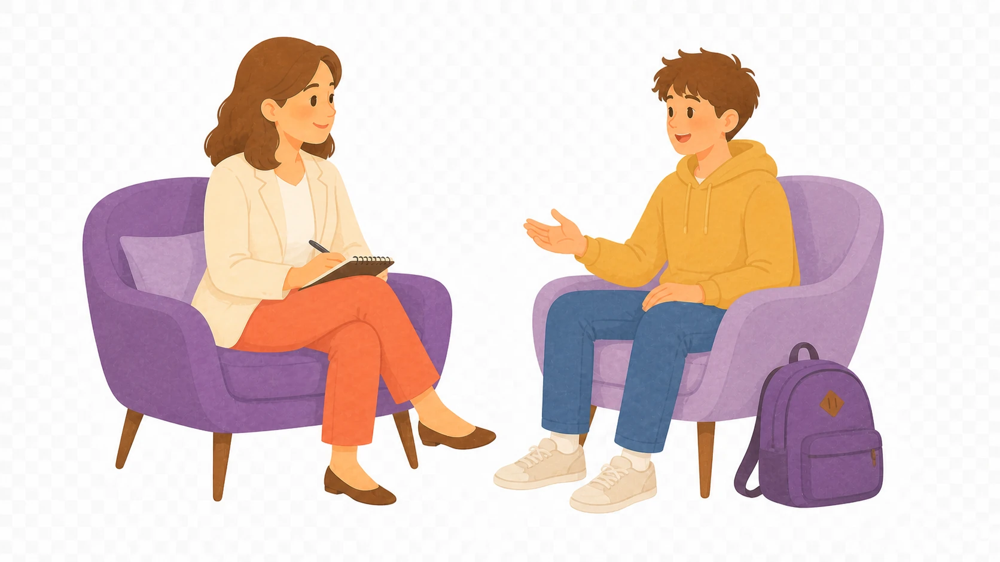

Bireysel Terapi
Kişinin kendi iç dünyasını anlamasına, yaşamdaki zorluklarla baş etmesine ve kişisel gelişimini desteklemesine odaklanan bir danışmanlık sürecidir.
Bilimsel temelli yaklaşımlarla, güvenli bir destek alanı.
Kendinizi anlaşılmış ve güvende hissedebileceğiniz, ihtiyaçlarınıza göre şekillenen bir psikolojik danışmanlık süreci. Karabük merkezde yüz yüze, Türkiye genelinde online görüşme.
Hakkımda
Her insanın hikâyesi kendine özgüdür; terapi de o hikâyeye dikkatle yaklaşan güvenli bir karşılaşmadır.
Merhaba, ben Selin. Terapiyi kişinin kendi iç dünyasını daha yakından tanıdığı; duygularına, ihtiyaçlarına ve ilişkilerine yeni bir yerden bakabildiği güvenli bir süreç olarak görüyorum.
Çalışmalarımda kişiyi tek bir belirti üzerinden değil; yaşam öyküsü, ilişkileri, kaynakları ve içinde bulunduğu koşullarla bir bütün olarak anlamaya özen gösteriyorum.
Sürecin hedeflerini ve ritmini danışanla birlikte belirlemeyi; yargısız, eşitlikçi bir ilişki kurmayı önemsiyorum.
Özgeçmişin tamamıHizmetlerim

Kişinin kendi iç dünyasını anlamasına, yaşamdaki zorluklarla baş etmesine ve kişisel gelişimini desteklemesine odaklanan bir danışmanlık sürecidir.

Aile üyelerinin ve çiftlerin birlikte çalışarak ilişkilerini güçlendirmelerine ve sorunlarla sağlıklı bir şekilde baş etmelerine yardımcı olur.

Çocukların duygusal ve psikolojik ihtiyaçlarını ele almak için oyunun doğal iyileştirici gücünden yararlanan bir terapi yöntemidir.

Genç bireylerin düşünsel, duygusal ve davranışsal gelişimini desteklemeyi amaçlayan, yaşa özgü yöntemlerle yürütülen özel bir alandır.
Görüşme biçimi
Yüz yüze seanslar, sakin ve güvenli bir terapi ortamında planlanır.
Randevu talebiBulunduğunuz yerden bağımsız olarak güvenli görüntülü görüşme aracılığıyla terapi desteğine ulaşabilirsiniz.
Randevu talebiİlk adımı atmak için formu doldurun. Uygun bir görüşme zamanı belirlemek üzere size dönüş yapalım.
Karabük ve çevresinde yüz yüze görüşmeler randevu ile gerçekleştirilir; Türkiye’nin her yerinden online görüşme yapılabilir.